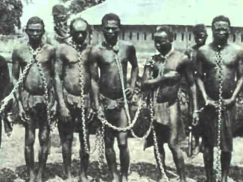
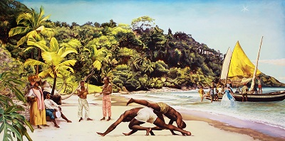

Istorija
Brazil kao portugalska kolonija
Godine 1500, Portugalci, vođeni istraživačem Pedrom Alvezom Kabralom, dolaze u Brazil. Jedna od prvih akcija pridošlih kolonista bila je asimilacija lokalnog stanovništva, brazilskih indiosa sa ciljem da se opskrbe robovskom snagom. Ideja sa korišćenjem indiosa kao robovske besplatne radne snage pokazala se kao promašaj. Indiosi su u zarobljeništvu brzo umirali ili su bežali duboko u džungle i šume Brazila. Kako je tokom 16. veka priobalni Brazil, kao portugalska kolonija, postao daleko najveći proizvođač šećera i ostalih sirovina u zapadnom svetu, potreba za robovima je naterala Portugal da iz već porobljene i trgovinski razrađene zapadne Afrike započne i njihov transport u južnu Ameriku.
Naseljavanje Brazila
Godine 1500, Portugalci, vođeni istraživačem Pedrom Alvezom Kabralom, dolaze u Brazil. Jedna od prvih akcija pridošlih kolonista bila je asimilacija lokalnog stanovništva, brazilskih indiosa sa ciljem da se opskrbe robovskom snagom. Ideja sa korišćenjem indiosa kao robovske besplatne radne snage pokazala se kao promašaj. Indiosi su u zarobljeništvu brzo umirali ili su bežali duboko u džungle i šume Brazila.
 Kako je tokom 16. veka priobalni Brazil, kao portugalska kolonija, postao daleko najveći proizvođač šećera i ostalih sirovina u zapadnom svetu, potreba za robovima je naterala Portugal da iz već porobljene i trgovinski razrađene zapadne Afrike započne i njihov transport u južnu Ameriku. Sa druge strane Atlantika, slobodni muškarci i žene su bili hvatani, ukrcavani na tovarne brodove i bili poslati na svoje putovanje bez povratka, koje je za većinu značilo život u lancima. Afrikanci su prvo dovođeni u stotinama a zatim u hiljadama. Od ukupnog broja porobljenih crnaca koji su transportovani u Novi Svet, Brazil je bio procentualno najveći 'uvoznik' robova sa preko 40%. Ne zna se koliko je tačno afričkih crnaca bilo deportovano u Brazil, ali uoči ukidanja ropstva 1888. godine, u Brazilu je bilo oko 3 miliona crnaca a ukupan broj stanovništva tada je dostigao 5 miliona ljudi.
Kako je tokom 16. veka priobalni Brazil, kao portugalska kolonija, postao daleko najveći proizvođač šećera i ostalih sirovina u zapadnom svetu, potreba za robovima je naterala Portugal da iz već porobljene i trgovinski razrađene zapadne Afrike započne i njihov transport u južnu Ameriku. Sa druge strane Atlantika, slobodni muškarci i žene su bili hvatani, ukrcavani na tovarne brodove i bili poslati na svoje putovanje bez povratka, koje je za većinu značilo život u lancima. Afrikanci su prvo dovođeni u stotinama a zatim u hiljadama. Od ukupnog broja porobljenih crnaca koji su transportovani u Novi Svet, Brazil je bio procentualno najveći 'uvoznik' robova sa preko 40%. Ne zna se koliko je tačno afričkih crnaca bilo deportovano u Brazil, ali uoči ukidanja ropstva 1888. godine, u Brazilu je bilo oko 3 miliona crnaca a ukupan broj stanovništva tada je dostigao 5 miliona ljudi.
Trgovina robovima je obavljana direktno sa Afrikom a ne preko posrednika (kao što je bio slučaj u severnoj Americi), tako sa su postojale čvrste veze između najvećih brazilskih luka (Salvador, Resife, Rio de Žaneiro) i luka na Robovskoj obali (Vidah, Lagos, zapadna Afrika). Naseljavanje robova je krenulo sa severoistoka države (Baija) ali se ubrzo raširilo i severnije (Maranjan, Pernambuko) i južnije (Rio de Žaneiro, Minas-Žerais) od Baije.
Crnci robovi koji su se našli u Brazilu pripadali su sledećim narodima:
- Joruba (koji su se u Brazilu zvali Nago)
- Eve (Džedže)
- Ašani
- Fanti (Akan)
- Dahomejci
- grupa naroda koja je pripadala islamskoj religiji: Tapa, Hausa, Mandingo, Fulbe
Deportovani su i narodi i iz južnoafričkog područja naseljeni narodima Bantu, uglavnom iz Angole, Mozambika i Konga.
Kulturno nasledje
 Robovi su sa sobom donosili svoju kulturu, različitu od Evropske. Kulturu koja nije bila skupljena u knjigama i muzejima, nego češće u njima samima, telu i duši, kultura koja je prenošena sa oca na sina, sa kolena na koleno, generacijama. Tu su bili Kandomble, njihova religija, birimbao-muzički instrument, vatapa-hrana i mnogo drugih stvari koje su ukratko činile njihov način života.
Robovi su sa sobom donosili svoju kulturu, različitu od Evropske. Kulturu koja nije bila skupljena u knjigama i muzejima, nego češće u njima samima, telu i duši, kultura koja je prenošena sa oca na sina, sa kolena na koleno, generacijama. Tu su bili Kandomble, njihova religija, birimbao-muzički instrument, vatapa-hrana i mnogo drugih stvari koje su ukratko činile njihov način života.
Mada su se crnci Brazila mešali teritorijalno i sa belcima i jedni sa drugima, bili su naseljeni u znatnoj meri prema etničkim grupama. Da bi sprečili ujedinjenje različitih etničkih grupa i njihove pobune, robovlasnici su podsticali razvijanje elemenata plemenskih kultura koje su ih razdvajale. One su bile dopustane i ohrabrivane ne samo kao način da se popusti konstantan pritisak ropstva kom su bili izloženi već i da se istaknu različitosti između samih robova koji su bili iz različitih Afričkih grupacija, po sistemu "zavadi pa vladaj" jer su često te grupacije međusobno bile u ratnim odnosima. Bez obzira na to, u takvoj situaciji mešanje različitih kultura je bilo neizbežno, što je i bio uzrok stvaranju mnogih kulturnih tvorevina, između ostalog i kapuere.
Kapuera
Koreni kapuere, bilo oni afrički ili brazilski, danas predstavljaju kontroverzu. Različite i suprotne teorije egzistiraju u pokušaju da daju odgovor na pitanje kako je sve počelo, gde je i kako nastala kapuera:
- neki oblik kapuere je već postojao u Africi ali je u Brazilu poprimio sadašnju formu i naziv
- kapuera je nastala mešanjem afričkih naroda i njihovih kultura u ruralnim delovima Brazila (Salvador, Rio de Žaneiro)...
 Za svaku od ovih teza ima mnogo argumenata ali se o njima i danas vode polemike. Bilo kako bilo, rani dani kapuere su obavijeni misterijom, mali broj dokumenata je sačuvan iz tog perioda. Ipak, svi se slažu u jednom: da je kapuera estetski i filozofski afro-brazilska veština koja se zasniva na tradicionalnim afričkim plesovima i ritualima, kojima su se robovi posvećivali kada nisu radili.Oni su se time, međutim - vežbajući duh i telo - istovremeno pripremali za situacije u realnoj borbi, a pošto su robovlasnici zabranili sve borilačke veštine, borbena strana kapuere bila je zamaskirana u ples.
Revolt kulminira pobunom na plantaži u Baiji gde 40-tak robova organizuje pobunu i u sukobu pobija sve bele stanovnike plantaže. Nakon toga odlaze duboko u džunglu i osnivaju jedno od nekoliko naselja poznatijih kao ''Quilombos'' (komuna robova). Najveće naselje tog tipa koje su osnovali odbegli robovi bio je Palmares, brojao je oko 20 hiljada stanovnika i održao se skoro ceo vek. Postojanje takvih naselja čiji stanovnici su silazili u kolonijalne delove radi trgovine, često je ohrabrivao još više robova da se odluči za bekstvo sa plantaža i ozbiljno je podrivalo uticaj kolonije. Bilo je više pokušaja da se kaznenim ekspedicijama razore takva naselja i vođene su velike borbe u kojima je sam gerilski način odbrane tih stanovnika počeo da se naziva kapuera.
Oko 1814 godine, kapuera i druge forme izražavanja afričke kulture su bile pod represijom i zabranom od strane robovlasnika i vladajućih slojeva. Zašto je kapuera bila zabranjivana, ima više motiva:
- davala je svojim praktičarima osećaj pripadnosti
- razvijala je samopouzdanje
- stvarala je male kohezione grupe
- praktikovanje je od njih činilo opasne i sposobne borce
- potencijalnu pretnju i izvor pobune
- često su se robovi povređivali radeći kapueru što sa ekonomskog aspekta nije bilo poželjno
Sami robovlasnici verovatno nisu bili svesni svih tih aspekata ali intuicijom koja je dolazila od vladajućeg režima i sami su osetili da tu nešto nije kako treba.
Kako se kapuera tada praktikovala?
U Rio de Janeiru i Recife-u se praktikovala u svojoj nasilnoj formi, u Baiji je već imala oblike ritualne Borbene igre jer su u njoj bili apsorbovani još neki elementi afričke kulture. Kapuera u to vreme je imala malo sličnosti sa kapuerom koja se praktikuje danas ili u poslednjih sto godina. Razaranjem slobodnih naselja velik broj robova ponovo biva prisiljen na rad na plantažama. Jedini dan kad se nije radilo, nedeljom kad se odlazilo u crkvu, bio je dan kad su robovi mogli da se posvete sebi. Tada se radila kapuera, igralo i pevalo. Tu negde muzika postaje sastavni deo praktikovanja, što delom da bi se prikrilo vežbanje i održavanje veštine borbe, što delom činjenice da je muzika bila sastavni deo mentaliteta robova.
Potpisivanjem zlatnog zakona 13. maja 1888.god. koji je ukinuo ropstvo, socijalno-ekonomski uslovi nisu pružili mnogo mogućnosti bivšim robovima za opstanak. Veliki broj njih odlazi u gradove gde se stvaraju favele. Kapueristi sa svojim borbenim sposobnostima, samopouzdanjem i iskustvom u konfliktnim uslovima i razvijenom svešću i individualnošću lako su se nalazili i snalazili sa druge strane zakona a i kapuera sa njima. U tim favelama kapueristi formiraju bande koje kontrolišu crno tržište, prostituciju i protok droge, takođe često bivaju politički angažovani kako bi uticali na klimave uslove u državnom sistemu i održavali nestabilnu situaciju u zemlji.
Kapuera u XIX veku
 Kao rezultat, kapuera je bila zabranjena zakonom (1892) i onima kojima koji su je praktikovali bile su izričane velike kazne. Igre kapuere su često održavane na mestima odakle je lako pobeći, a postojao je i poseban ritam (kavalarija) koji se svirao u slučaju da dolazi policija. Da bi se što lakše sakrili od zakona, kapueristi su često imali i po nekoliko različitih nadimaka, kojim bi sakrivali svoje stvarne identitete.
Kao rezultat, kapuera je bila zabranjena zakonom (1892) i onima kojima koji su je praktikovali bile su izričane velike kazne. Igre kapuere su često održavane na mestima odakle je lako pobeći, a postojao je i poseban ritam (kavalarija) koji se svirao u slučaju da dolazi policija. Da bi se što lakše sakrili od zakona, kapueristi su često imali i po nekoliko različitih nadimaka, kojim bi sakrivali svoje stvarne identitete.
Skoro svaki kapuerista ima svoj nadimak - apelido. Taj nadimak se najćešće dobija od strane starijih kapuerista i majstora, a obično predstavlja neku fizičku karakteristiku osobe koja ga nosi, stil igranja ili pak karakternu osobinu.
Odluka vlasti da izbrišu kapueru sa ulica Brazila bila je veoma odlučna. Tadašnje vlasti su angažovale za to čoveka po imenu Sampaio koji je imao reputaciju najnemilosrdnijeg šefa policije u brazilskoj istoriji. On je bio odlučan u nameri da iskoreni kapueru. Interesantna činjenica u vezi sa njim jeste da je on sam bio izuzetan kapuerista i predstavljao je strah za bande.
Sampaiovi specijalni policijski odredi su učili kapueru kako bi mogli da izazovu svoje ''protivnike'' na njihovom domaćem terenu. Da nije bilo jakog otpora od strane kapuerista ali i podrške uticajnih ljudi on bi uspeo u svojoj nameri. Jedan incident je doveo do kraja njegovom nemilosrdnom progonu kapuerista. U jednoj akciji uhapsio je čoveka po imenu Juca koji je pripadao visokom društvu i po kazni trebala je da bude izvršena kazna ekstradicije iz zemlje. To je izazvalo krizu u vladi reakcijom članova predsedničkog kabineta, zato sto je Jucin otac bio veoma poznata i uticajna licnost među mnogim političarima. Predsednik je sazvao specijalni sastanak kabineta i nakon 18 dana dva važna člana kabineta su podnela ostavku i Juca je ipak bio proteran.
Nakon ovoga očekivan je bila promena u ponašanju kapuerista. Na sreću ta promena je bila u njihovu korist. Opozicioni deo vlade je formirala struju crne policije koja je imala za cilj da destabilizuje predsednika. Ova milicija je bila formirana isključivo od kapuerista i oni su širili strah i paniku kroz grad gde god bi se pojavljivali. I u trenutku kad je situacija postala kritična, Brazil je ušao u rat sa Paragvajem. Ovi odredi su bili poslati u prve redove i dojučerašnji odmetnici su postali heroji. Taj događaj označava ulazak kapueire u novu fazu u istoriji.
Kapuera u XX veku
Početkom dvadesetih godina XX veka kapuera polako počinje da izlazi iz mračnog perioda svoje istorije. Za njen preporod su zaslužna dva velika majstora: mestre Bimba i mestre Pastinha.Meštre Bimba (Manoel dos Reis Machado 1900-1974) je uspeo da vlastima ukaže na kulturnu vrednost kapuere, što je dovelo do ukidanja njene zabrane. Kapuera je priznata kao nacionalni sport 1937. godine, kada je u Salvadoru meštre Bimba otvorio prvu školu koja je registrovana pred zakonom. Škola se zvala Centro de Cultura fisica Regional Baiano, po kojoj način na koji je on to radio karakteristican po nekim inovacijama u treningu postaje poznat kao Capoeira Regional iako on sam to nikad nije naglašavao. Uveo je sistematičnost u trening, gradaciju po pojasevima, kojom su se razlikovali stariji vežbači, oficijelna oprema u kojoj se vežba kao i neke nove ritmove koji su igru učinili brzom i gde je borilački i sportski duh došao u prvi plan, žrtvujući time dosta od nekih tradicionalnih stvari. Uprkos tome njegova škola doživljava pravu eksploziju popularnosti jer kapueru počinju da treniraju i viši slojevi društva dok je do tad kapuera bila rezervisana za najniže lestvice društva. Kapuera se od vremena meštrea Bimbe do današnjih dana menjala, poprimajući obeležja sredine u kojoj se razvijala, ali je svojim osnovnim postavkama ostala jedinstvena borilačka veština.
Meštre Paštinha (Vincente Ferreira Pastinha 1889-1981) se takođe potpuno opravdano smatra velikanom kapuere. Godine 1941. Meštre Paštinha otvara svoju prvu kapuera školu koja zbog naglašenog poštovanja tradicije i negovanja povezanosti sa afričkim nasleđem postaje poznata kao Capoeira angola škola. Paštinha se zbog svojih mnogobrojnih aforizama smatra filozofom kapuere.
Napadi u kapueri su uglavnom udarci nogom, čišćenja i udarci glavom. Kako se u Africi veruje, ruke služe za kreativnost, a noge za destrukciju. U kapueri postoje i udarci rukom, ali se retko viđaju (galupante, telefono...).
Od novembra 2014. godine kapuera se nalazi pod zaštitom UNESCA i uvrštena je na listu nematerijalne kulturne baštine Brazila.
mestre Bimba
(Manoel dos Reis Machado)
1900-1974

mestre Pastinha
(Vincente Ferreira Pastinha)
1889-1981
Capoeira Senzala Kragujevac © 2016